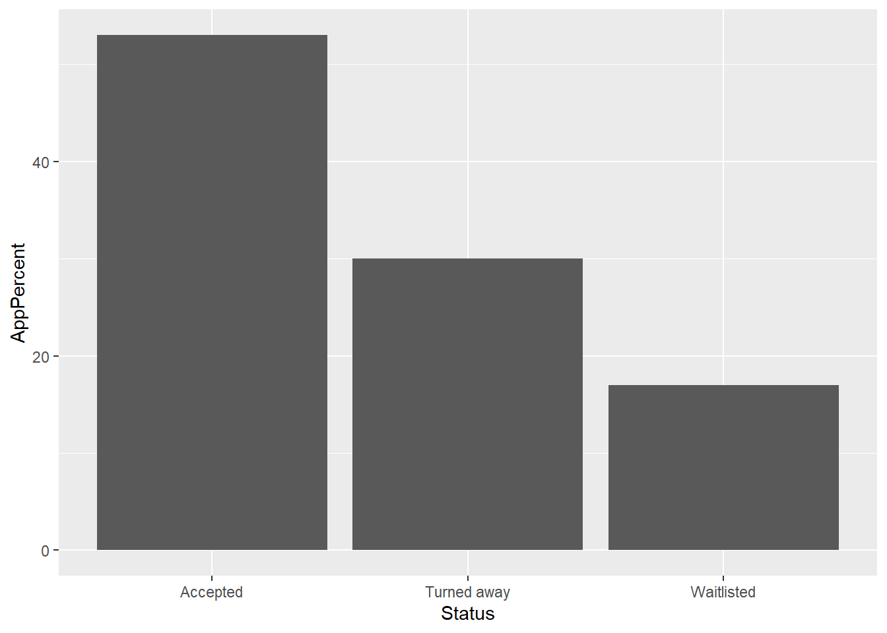
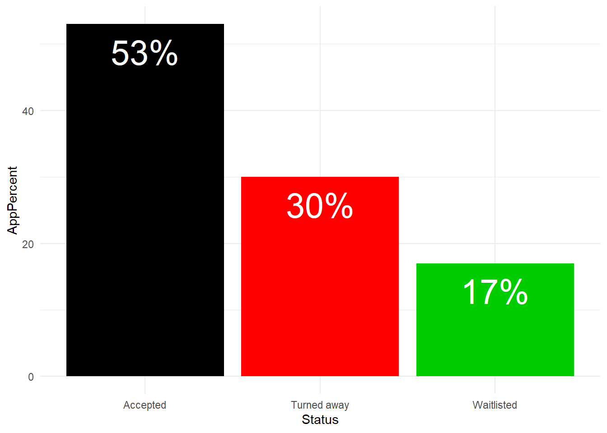
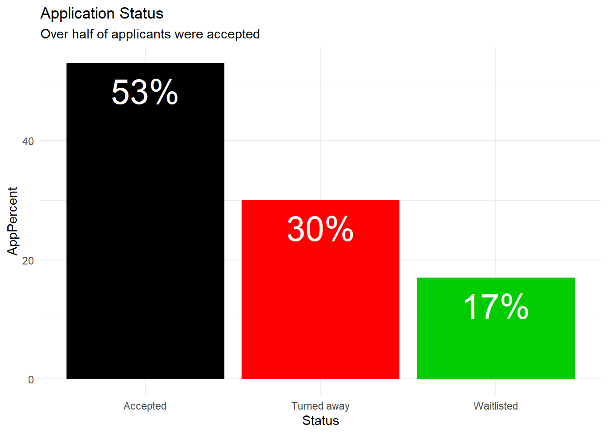
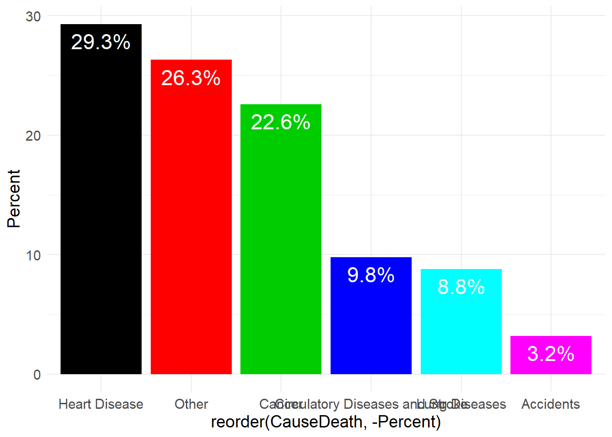
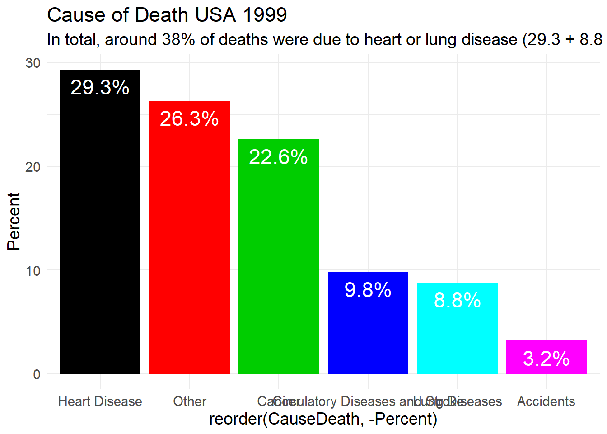
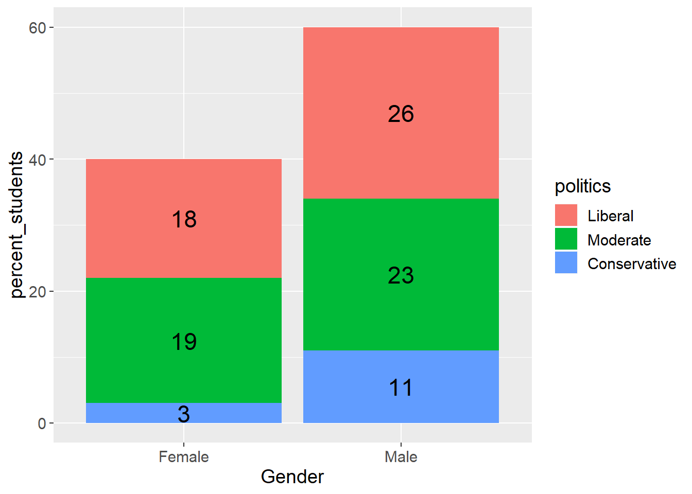
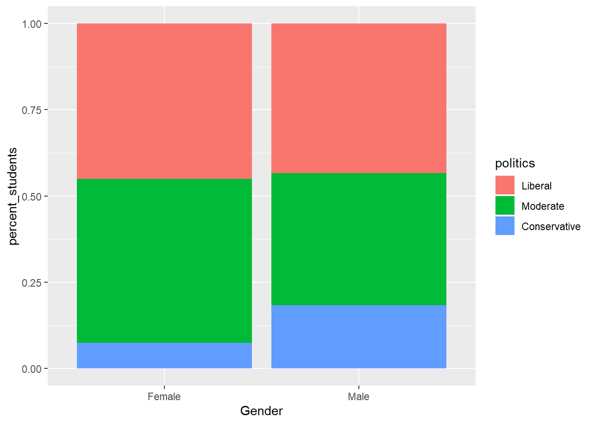
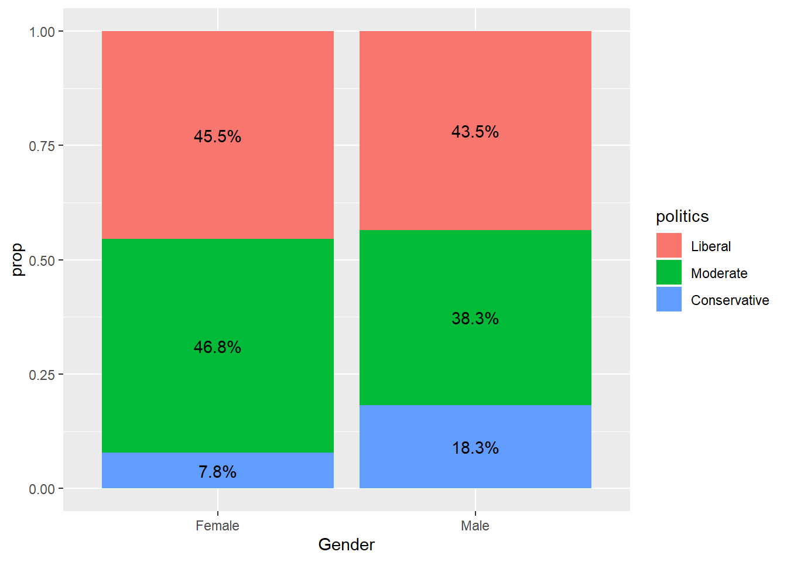

A summary of rows by category. Normally a count “how frequent does this category type show up in the data?”
Same as above but categories are calculated as a percentage of the total.
Think pivot table in Excel with rows and columns. Take two variables and compare how individuals are distributed along each variable (column) contingent on the other variable (row).
Marginal distribution is essentially the “total” column /row for each of the variables. Marginal distribution can be in counts or percentages.
This is distribution of one variable that only satisfy a condition on another variable e.g. distribution of titanic passengers by class that died vs. same distribution for those that survived.
If there is no difference in conditional distribution of a variable for different categories in another variable then we can say that the variables are independent of each other.
This is only a very simplified approach to statistical analysis, more will come later.
When looking at the overall result can get what appears to be contradictory results when looking at group results. So, overall, one student has a worse average than another student but if you look at the breakdown by test type, one student takes a lot of hard tests (and scores 70% right against the other student getting only 50% right, but takes less hard tests) while the same student scores higher on the easy tests (90% versus only 85% by the other student), because the other student takes mostly easy tests, their overall average is higher.
First of all, create the data frame and add percentage calculation
ex15data <- data.frame(Status = c("Accepted", "Waitlisted", "Turned away"), Number = c(931, 298, 526))
ex15data$AppPercent = round((ex15data$Number / sum(ex15data$Number))*100,0)Create a bar chart
library(ggplot2)
ggplot(data=ex15data, aes(x=Status, y=AppPercent)) + geom_bar(stat="identity")
Create a more complicated bar chart. Note that it is possible to add explanatory text to the chart if not using something like RMarkdown (like this notebook)
some instructions for extra bar chart functions: http://www.sthda.com/english/wiki/ggplot2-barplots-quick-start-guide-r-software-and-data-visualization
pEx15 <- ggplot(data=ex15data, aes(x=Status, y=AppPercent)) + geom_bar(stat="identity", fill=rownames(ex15data))+
geom_text(aes(label=paste(AppPercent, "%",sep = "")), vjust=1.6, color="white", size=10)+ theme_minimal()
pEx15
pEx15 + labs(title = 'Application Status', subtitle = "Over half of applicants were accepted")
Create the data frame
ex17data <- data.frame(CauseDeath = c("Heart Disease", "Cancer", "Lung Diseases",
"Circulatory Diseases and Stroke", "Accidents", "Other"), Percent = c(29.3,
22.6, 8.8, 9.8, 3.2, 26.3))Note “reorder” used in this example to sort highest to lowest.
The plot is first set to pEx17, and the run separately.
pEx17 <- ggplot(data=ex17data, aes(x = reorder(CauseDeath, -Percent), y=Percent)) + geom_bar(stat="identity", fill=rownames(ex17data))+
geom_text(aes(label=paste(Percent, "%",sep = "")), vjust=1.6, color="white", size=6)+ theme_minimal() + theme(text = element_text(size = 14))
pEx17
This way of setting the plot allows you to add extra bits of info one chunk at a time:
pEx17 + labs(title = 'Cause of Death USA 1999', subtitle = "In total, around 38% of deaths were due to heart or lung disease (29.3 + 8.8 %)")
Tried to find code to get the “Other” column to appear at the end but couldn’t get this to work:
https://stackoverflow.com/questions/31613794/r-ggplot-specific-order-of-bars
Set the data frame
ex28data <- data.frame(Gender = c("Female", "Male"), Liberal = c(35,
50), Moderate = c(36, 44), Conservative = c(6, 21))But this doesn’t give us the data in the right format, need to “unpivot” the data which is called “melt” in R or “stack”
https://stackoverflow.com/questions/7980030/how-to-pivot-unpivot-cast-melt-data-frame
ex28stack <- cbind(ex28data[1], stack(ex28data[-1]))
summary(ex28stack)## Gender values ind
## Female:3 Min. : 6.0 Liberal :2
## Male :3 1st Qu.:24.5 Moderate :2
## Median :35.5 Conservative:2
## Mean :32.0
## 3rd Qu.:42.0
## Max. :50.0Rename column to make it more understandable See this website: https://www.datanovia.com/en/lessons/rename-data-frame-columns-in-r/
# get column names
colnames(ex28stack)## [1] "Gender" "values" "ind"# Change column number 3 -was called "ind"
names(ex28stack)[2] <- "number_students"
names(ex28stack)[3] <- "politics"
#get column names again
colnames(ex28stack)## [1] "Gender" "number_students" "politics"Create percentage calculation
# calculate percentage
ex28stack$percent_students = round((ex28stack$number_students / sum(ex28stack$number_students))*100,0)
#get column names again to show new column created
colnames(ex28stack)## [1] "Gender" "number_students" "politics"
## [4] "percent_students"summary(ex28stack)## Gender number_students politics percent_students
## Female:3 Min. : 6.0 Liberal :2 Min. : 3.00
## Male :3 1st Qu.:24.5 Moderate :2 1st Qu.:12.75
## Median :35.5 Conservative:2 Median :18.50
## Mean :32.0 Mean :16.67
## 3rd Qu.:42.0 3rd Qu.:22.00
## Max. :50.0 Max. :26.00Show as stacked bar chart after lots of over-complicated wrong turns, this site had the best summary: https://ggplot2.tidyverse.org/reference/geom_text.html
However, this doesn’t give us proportional distribution in each category Male/Female. It gives the percentage of the total for each unique combination of Gender/Politics. This isn’t quite what we want…
Need to dig into Frequency tables instead…
# must load the ggplot2 library before it can be used
library("ggplot2")
ggplot(data = ex28stack, aes(x = Gender, y = percent_students, group = politics)) +
geom_col(aes(fill = politics)) +
geom_text(aes(label = percent_students), position = position_stack(vjust = 0.5), size = 6) + theme(text = element_text(size = 14))
Thought this would be straight forward, but need to identify correct library for the job.
Using the table() function results in just counts, but this data set need sum.
table(ex28stack$Gender, ex28stack$politics)##
## Liberal Moderate Conservative
## Female 1 1 1
## Male 1 1 1Using dplyr library gets this result as a plain table
library(dplyr)##
## Attaching package: 'dplyr'## The following objects are masked from 'package:stats':
##
## filter, lag## The following objects are masked from 'package:base':
##
## intersect, setdiff, setequal, uniongroup_by(ex28stack , Gender, politics) %>%
summarise(sum = number_students)## # A tibble: 6 x 3
## # Groups: Gender [2]
## Gender politics sum
## <fct> <fct> <dbl>
## 1 Female Liberal 35
## 2 Female Moderate 36
## 3 Female Conservative 6
## 4 Male Liberal 50
## 5 Male Moderate 44
## 6 Male Conservative 21This summary table uses the reshape library:
https://stackoverflow.com/questions/32325858/r-table-function-how-to-sum-instead-of-counting
Or we can use dcast to convert from ‘long’ to ‘wide’ format. It is more flexible as we can specify the fun.aggregate to sum, mean, median etc.
library(reshape2)
ex28table <- dcast(ex28stack, Gender~politics, value.var='number_students', sum)
ex28table## Gender Liberal Moderate Conservative
## 1 Female 35 36 6
## 2 Male 50 44 21This page on frequencies explains how to use the xtabs function https://www.statmethods.net/stats/frequencies.html Plus here to: https://homerhanumat.github.io/tigerstats/xtabs.html
# Create a table by applying xtabs to dataframe
ex28table2 <- xtabs(number_students~Gender+politics, data=ex28stack)
ftable(ex28table2) # print table## politics Liberal Moderate Conservative
## Gender
## Female 35 36 6
## Male 50 44 21# add in 2 line breaks to make output clearer.
writeLines("\n \n")margin.table(ex28table2, 1) # A frequencies (summed over B) i.e Gender summed over politics## Gender
## Female Male
## 77 115margin.table(ex28table2, 2) # B frequencies (summed over A) i.e politics summed over Gender## politics
## Liberal Moderate Conservative
## 85 80 27prop.table(ex28table2) # cell percentages## politics
## Gender Liberal Moderate Conservative
## Female 0.1822917 0.1875000 0.0312500
## Male 0.2604167 0.2291667 0.1093750prop.table(ex28table2, 1) # row percentages## politics
## Gender Liberal Moderate Conservative
## Female 0.45454545 0.46753247 0.07792208
## Male 0.43478261 0.38260870 0.18260870prop.table(ex28table2, 2) # column percentages## politics
## Gender Liberal Moderate Conservative
## Female 0.4117647 0.4500000 0.2222222
## Male 0.5882353 0.5500000 0.7777778 # margins with totals
addmargins(prop.table(ex28table2, 2)) # column percentages with margins## politics
## Gender Liberal Moderate Conservative Sum
## Female 0.4117647 0.4500000 0.2222222 1.0839869
## Male 0.5882353 0.5500000 0.7777778 1.9160131
## Sum 1.0000000 1.0000000 1.0000000 3.0000000This gives the information we need to be able to answer the questions:
# need to get use the row percentages to get the right numbers.
# just for fun, can prefilter the data using dplyr
library(dplyr)
ex28Female <- filter(ex28stack,Gender=="Female")
ex28tableF <- xtabs(number_students~Gender+politics, data=ex28Female)
prop.table(ex28tableF, 1) # row percentages## politics
## Gender Liberal Moderate Conservative
## Female 0.45454545 0.46753247 0.07792208
## Male# need to get use the row percentages to get the right numbers.
# just for fun, can prefilter the data using dplyr
library(dplyr)
ex28Male <- filter(ex28stack,Gender=="Male")
ex28tableM <- xtabs(number_students~Gender+politics, data=ex28Male)
prop.table(ex28tableM, 1) # row percentages## politics
## Gender Liberal Moderate Conservative
## Female
## Male 0.4347826 0.3826087 0.1826087# This page was useful https://www.r-graph-gallery.com/48-grouped-barplot-with-ggplot2.html
library(ggplot2)
ggplot(ex28stack, aes(fill=politics, y=percent_students, x=Gender, label = paste0(round(percent_students*100), "%"))) + geom_bar(position = "fill", stat = "identity")
However, this doesn’t get any labels on the chart, which is apparently really difficult for some reason (maybe I’ll go back to Excel ;-) ) Explanation was here: https://gist.github.com/jsonbecker/0cc702804512fdf29c7f9067adfc17d0 What this does is make a percentage calculation for the GROUP of gender first, so the initial bar chart at the beginning of this process was wrong because it didn’t group the data first, but gave a percentage for each cmbination of Gender and politics.
library(ggplot2)
library(dplyr)
# dplyr uses pipes to create new data in the dataframe %>%
ex28stack %>%
group_by(Gender) %>%
#prop is the new variable being created to hold the percentage calculations
mutate(prop = number_students / sum(number_students)) %>%
ggplot(aes(Gender, prop, fill = politics)) +
geom_col() +
geom_text(aes(label = scales::percent(prop)), position = position_stack(vjust = 0.5)) 
No, there seems to be a fairly strong indication that Males are more likely to describe themeselves as conservative compared to females.
I also tried the library “summarytools” but I couldn’t find how to specify that the table should look at the sum of the values and not the number of rows:
library(summarytools)## Registered S3 method overwritten by 'pryr':
## method from
## print.bytes Rcppsummarytools::freq(ex28stack$Gender, order = "freq")## Frequencies
##
## Freq % Valid % Valid Cum. % Total % Total Cum.
## ------------ ------ --------- -------------- --------- --------------
## Female 3 50.00 50.00 50.00 50.00
## Male 3 50.00 100.00 50.00 100.00
## <NA> 0 0.00 100.00
## Total 6 100.00 100.00 100.00 100.00print(ctable(ex28stack$Gender, ex28stack$politics, prop = "r"), method = "render")| ex28stack$politics | ||||||||||||||||
|---|---|---|---|---|---|---|---|---|---|---|---|---|---|---|---|---|
| ex28stack$Gender | Liberal | Moderate | Conservative | Total | ||||||||||||
| Female | 1 | ( | 33.3% | ) | 1 | ( | 33.3% | ) | 1 | ( | 33.3% | ) | 3 | ( | 100.0% | ) |
| Male | 1 | ( | 33.3% | ) | 1 | ( | 33.3% | ) | 1 | ( | 33.3% | ) | 3 | ( | 100.0% | ) |
| Total | 2 | ( | 33.3% | ) | 2 | ( | 33.3% | ) | 2 | ( | 33.3% | ) | 6 | ( | 100.0% | ) |
Generated by summarytools 0.9.4 (R version 3.6.1)
2019-09-27